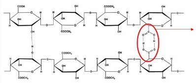

Meet the Pectin Molecule!
Welcome to my example molecule page for 7th grade chemistry. Please take a look around to get an idea for what you might want to do when you research a molecule of your choice. If you’d like to send me an email, I’d be more than happy to return your correspondence!
Overview
The word "pectin" comes from an Ancient Greek word that means "congealed" or "curdled". Henri Braconnot first isolated and described pectin in 1825. I became interested in pectin when I bought some to make jam from the pluot tree that grows in my garden.
Human Uses and Consequences
The most pectin in fruits is found in pears, apples, guavas, quince, plums, gooseberries, and oranges. You can buy pectin at the store as a white to light brown powder that is mainly extracted from citrus fruit rinds (that get discarded as part of the juicing process). Pectin is used by people to thicken jams and jellies so it is called a "gelling agent." Other uses include to make adhesive for dentures, to prepare sweet desserts and to stabilize fruit juices and milk drinks. You can take pectin as an extra source of dietary fiber, which might help you lower your cholesterol!
How the Structure of the Molecule Helps it to Function
Pectin is found naturally in the cell walls of land plants. It plays an important role for plants in both giving them their structure and also helping the cells to connect to each other as plants grow and change shape. When pectins in leaves and fruit break down, this causes them to ripen/change colors and soften. Pectin is a structural heteropolysaccharide (meaning that it is made of many sugars, the simplest carbohydrates). It also is a sugar-based biopolymer, meaning it is made of many monomers that are covalently bonded together. What basically happens is that the pectin's structure binds with water in an acid environment, making it so the water is trapped and no longer can move around. Other simple sugars, like sucrose, can increase this binding even more.
CHEMICAL FORMULA: C6H10O7
| Carbon | 6 atoms |
| Hydrogen | 10 atoms |
| Oxygen | 7 atoms |
Carbon = gray, Oxygen = red, Hydrogen = white
Here is a 3-D image of the pectin molecule (you can click and drag to rotate it):
Pectin bound together and trapping a water molecule:

Sources: